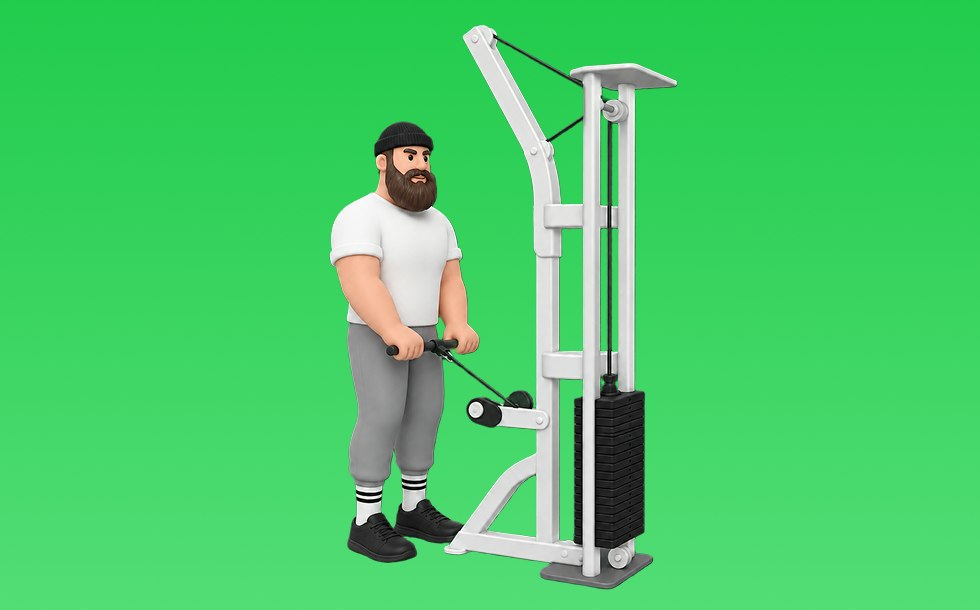

ケーブルリバースカール

ケーブルリバースカールとは、ケーブルを使って順手で「肘を曲げる」動作で腕（上腕二頭筋）と前腕伸筋群を鍛える種目です。可動域全体で張力が抜けにくいのが特徴で、手首を反らしすぎずに引き上げ、ゆっくり戻す動作を繰り返します。前腕の発達や握力補強が期待できます。
- 対象部位
- 腕
- 器具
- ケーブル
- 記録形式
- 重量・回数
- 別名
- リバースケーブルカール / ケーブルプロネーションカール / cable reverse curl
YouTube動画
-
【筋トレ】リバースグリップケーブルカールで腕橈骨筋を鍛える！【S2BodyMake】
-
腕が太くなる！上腕筋を狙うケーブルハンマーカールの正しいフォームとは？
-
【初心者】ケーブルカールの効果的なやり方 | ケーブルカールのバリエーション【ビーレジェンド プロテイン】
-
【前腕・上腕筋トレ】リバースカールの正しいフォーム・やり方をご紹介 | 前腕・上腕筋を狙ったモテ腕を作るトレーニング！
-
【たった１分】前腕を極太にするリバースカール徹底解説
-
【リバースカール】前腕・上腕を急激に太くする効果的なやり方をプロが解説
-
【バーベルカール】二頭筋ガチトレ8種目 解説付き
YouTubeショート
-
ケーブルリバースカール（Cable Reverse Curl）のやり方とフォーム
-
【THAT'Sトレーニング】リバース・ケーブルカール
-
リバースカール（Reverse Curl）の基本フォームとやり方
-
正しいケーブルプレスダウン4つのポイント #筋トレ
-
前腕鍛えるならコレ‼️【ケーブルリバースカール】
-
サンテ整骨院グループ 博多駅東整骨院ジム トレーニング ケーブルリバースカール #上腕筋 #腕橈骨筋 #shorts
-
背中を最大限に鍛える種目3選【筋トレ】
-
リバースカールがめちゃ腕の形よくなる#筋トレ #shorts #ぷろたん
-
前腕が太くなる魔法のルーティン
-
こんなバーベルカールはやめろ！正しいフォーム解説 #筋トレ
-
持田選手とハムちゃんにケーブルを使ったアームカールについてレクチャーしていてもらいました！次はどの種目の解説をやってほしいかコメントしてね！#筋トレ #volix #トレーニング #ちょこっと惜しい
-
【ケーブルハンマーカール】これ見るだけでフォーム攻略 #ダイエット #トレーニング #二の腕痩せ #二の腕引き締め #二の腕トレーニング
-
前腕をバチボコに太くするトレーニング8選！#shorts
-
効果がないハンマーカール #筋トレ
-
㊗️100万再生🎉とんでもねぇ前腕。
-
みなさんはケーブルハンマーカールやってますか？持田選手とこんがりさんが前腕に効くトレーニングをレクチャーしてくれました！#筋トレ #volix #前腕トレ #ちょこっと惜しい #上腕二頭筋
-
ケーブルリバースフライ（Cable Reverse Fly）のやり方とフォーム
-
極太の二頭筋を作りたい人必見
-
早く知りたかった腕トレ③ハンマーカール #shorts #筋トレ
-
背中が成長しないラットプルダウン
-
前腕を太くする最強の6種目🔥#前腕 #前腕トレ #ジム
-
【腹筋トレ解説】ケーブルクランチ #筋トレ解説 #腹筋トレ #腹筋トレーニング
-
正しいラットプルダウン4つのポイント【筋トレ】
-
【今すぐやめろ】前腕が成長しなくなる握力トレやカール(科学的腕トレ) #shorts
-
【よくある間違いケーブルプレスダウン】 #ダイエット #筋トレ #新座市 #志木市 #ケーブルプレスダウン
-
【IFBB PRO 上里選手】筋トレ初心者必見!!背中種目で注意すべきこと
-
山本義徳のダンベルカール重量 挙げれる人います？#shorts #youtubeshorts #筋トレ#山本義徳 #山岸秀匡 #valx #筋トレ
-
正しいサイドレイズ4つのポイント #筋トレ
-
【二頭トレ解説】ケーブルハンマーカール #筋トレ解説 #二頭筋 #腕トレーニング
-
5kgのダンベルで自宅で5分！バキバキの前腕を作る筋トレ！#shorts #筋トレ #fitness
-
【よくある間違いハンマーカール】#筋トレ #ダイエット #新座市 #志木市 #朝霞市
-
正しいダンベルロウ4つのポイント #筋トレ
-
上腕二頭筋おすすめのグリップを紹介 #筋トレ #フィットネス
-
ハンマーカールよりオススメ！リバースカールの解説
-
このアームカールはやめろ！#shorts
-
【ダンベル】胸全部鍛えるトレーニング４選 #筋トレ
-
【よくある間違いケーブルハンマーカール】 #筋トレ #ダイエット #志木市 #新座市 #朝霞市 #パーソナルジム #大泉学園 #東久留米 #ケーブルハンマーカール
動作方法
- 肘の位置を固定して構える
- 肘を軸にして持ち上げる
- ゆっくり下ろして負荷を保つ
動作ポイント
- 肘を前後に振りすぎない
- 手首を反らしすぎない
ワンポイントアドバイス
- 肘の位置を固定すると狙った部位に効きやすい
- 回数を急がず、下ろし動作を丁寧に行う
目的別回数設定
目的や体力に応じた一般的な目安です。無理のない範囲で調整してください。
- 筋力アップ
- 1〜5回
- 筋肥大
- 6〜12回
- 持久力アップ
- 13〜20回
YouTube動画について
動画はYouTubeの公開情報をもとに表示しています。内容は投稿者によるもので、Biggrによる監修ではありません。
アプリを入手
筋トレやトレーニングの記録はBiggrにお任せください。今すぐ無料で使い始められます。